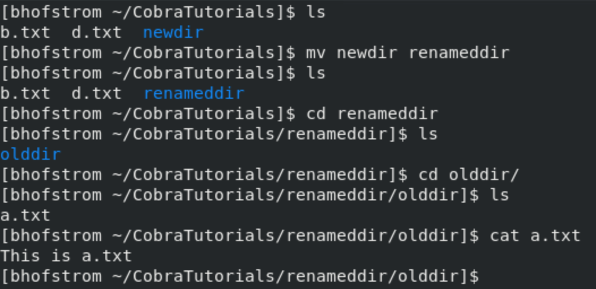

Section 4: Manipulating UNIX Files and Directories
Video will go here
Feel confident about your knowledge already? Check your understanding and take the quiz for this tutorial!
In the last tutorial, we looked at the UNIX file system and discovered how we navigate our way through it. In this section, we will learn how we can further manipulate UNIX files to our advantage with more UNIX commands!
Moving And Renaming Files And Directories
On a web server, having the ability to move files from one location to another is crucial. UNIX has an easy, simple to use command to do just that. The mv or move command allows a user to take the contents of a file and transfer it to another. Additionally, the move command acts as a way for a user to rename a file while keeping its contents intact. It is important to remember that after executing the move command, the original file will be deleted. Let’s look at some examples involving the move command!
For the following examples, we will start off with three files, “a.txt”, “b.txt”, and “c.txt”, as well as an empty directory named “olddir”. All files will be located in a directory named “CobraTutorials”.
Moving A File
Imagine a user wants to move “a.txt” to the “olddir” directory. In general, the move command follows the following format: mv <source> <destination> with source referring to the file’s original location and destination referring to the new, designated file location. In order to properly move “a.txt” to “olddir”, we use the following command: mv a.txt olddir. To ensure the command functioned correctly, we will use the cat command to check the contents of “a.txt”. For our purposes, “a.txt” shall contain the text “This is a.txt”.
Moving a Directory
Just like moving a file, moving directories is just as possible. Moving directories follows the same format of mv <source> <destination> with the only difference being we are targeting directories. Following the previous example, let’s say we wanted to move the “olddir” directory into a new directory properly named “newdir”. After making a “newdir” directory via the mkdir command, we can accomplish our goal using the following command: mv olddir newdir. Again, we can check that the command executed properly by ensuring the contents of “olddir” are preserved properly in “newdir”.
As you can see from the snippet above, the directory “olddir” is originally located in the “CobraTutorials” directory; however, following the move command and after entering the “newdir” subdirectory, you can see the “olddir” directory has become a subdirectory of the “new dir” directory. Not only that, but the contents of “olddir” are properly preserved within “newdir” via the cat command. We have successfully moved a directory!
Renaming A File
As mentioned earlier, the move command has a secondary function of renaming files. The way in which a user accomplishes this is by using the move command in the following fashion: mv <old_filename> <new_filename>. This version of the move command is exactly the same as if you were to move a file, except in this case, think of the first argument being the old filename you want to change and the new filename being the new name for the old file. For example, let's say we wanted to change “c.txt” to be called “d.txt”. We can perform this by using the following command: mv c.txt d.txt. To ensure the command functioned correctly, we will use the cat command to check the contents of “d.txt”. For our purposes, “d.txt” shall read “This is c.txt”.
From the above snippet, you can see that following the move command, “c.txt” is renamed to “d.txt”. Despite the renaming, the contents of “c.txt” are preserved within “d.txt” showing the file was indeed renamed. We have successfully renamed a file!
Renaming A Directory
The process of renaming a directory is exactly the same as renaming a file except we are now using directories. Let’s say we wanted to rename “newdir” to “renameddir”. This can be easily accomplished using the following command: mv newdir renameddir. To check if the command worked, we can expect the “renameddir” directory to contain the “olddir” directory from the previous examples.
As you can see in the snippet above, following the move command, “newdir” is renamed to “renameddir”. Despite the renaming, the contents of “newdir” are preserved within the new “renameddir” directory. We have successfully renamed a directory!
Copying Files and Directories
Just like moving files, being able to make copies and duplicate files on a web server may prove particularly useful. Thankfully, UNIX comes prepared with a built-in copy command or cp. Like the move command, the copy command takes the contents of one file and transfers it to another file; however, unlike the move command, the original file is not deleted. Instead, we are left with two files, an original file and a copied file, after executing the command. Let’s look at some examples involving the copy command!
Copying A File
In order to copy a file, a user can use the copy command with the following syntax: cp <source> <destination>. When implementing this command, think of the source as the file to be copied and the destination being where the copy is stored. Let’s say that we wanted to copy the “b.txt” and its contents to the file “bcopy.txt”. This can easily be done using the command: cp b.txt bcopy.txt. To ensure the command functioned correctly, we will use the cat command to check the contents of “b.txt” and “bcopy.txt”. For our purposes, both these files should read “This is b.txt”.
As you can see from the above snippet, before using the copy command, we are left with a file named “b.txt”. After using the copy command, the “CobraTutorials” directory now contains both a “b.txt” file and a “bcopy.txt” file. Both of these files also contain the same information as “bcopy.txt” preserves the information passed down from “b.txt”. We have successfully copied a file!
Copying A Directory
The process behind copying a directory follows the same concepts as copying a file, now we are just using directories instead. There is one major difference however and this difference involves the use of the -r or --recursive option. By adding the -r option, all files and directories present in any subdirectories will be transferred during the copy. For example, let’s say we wanted to copy the contents of the directory “renameddir” from earlier into a new directory named “copydir”. This is easily achieved by using the command: cp -r renameddir copydir. The -r option is necessary as the subdirectory “olddir” is inside the “renameddir” directory from previous examples. Again, we can observe the command functioned properly by observing the contents of both “renameddir” and “copydir” following command execution.
As you can observe from the snippet above, before the cp command, there is only one directory named “renameddir”. Following the copy command, we can now see two directories, “renameddir” and “copydir”. Both of these directories contain the “olddir” directory as “copydir” now has the same information as “renameddir”. We have successfully copied a directory!
Removing Files And Directories
Being able to remove web pages from a web server is the last essential skill needed for web developers. The remove, or rm command, can easily remove any file while the removed directory, or rmdir command, can easily remove any empty directory. Let’s look at some examples using rm and rmdir commands respectively!
Removing Files
In order to remove a file from the UNIX file system, we can use the remove command with following syntax: rm <filename> with filename being the file you want to target for removal. Let’s say we want to remove the copied file we made previously: “bcopy.txt”. This can easily be done using the command: rm bcopy.txt.
As you can see from the screenshot above, before the remove command is used, the “CobraTutorials” directory contains a file named “bcopy.txt”. Following the remove command however, the file is no longer inside the directory and has been subsequently removed from the file UNIX file tree. We have successfully removed a file!
Removing Directories
To remove any empty directory from a UNIX filesystem, we must use the remove directory command with the following syntax: rmdir <directory_name> with directory name being the target directory to be removed. If the target directory has any subfiles and/or subdirectories contained within, we must instead use the rm command and add the -r or --recursive option to ensure all the contents of the target directory are removed properly. The command is modified as such: rm -r <directory_name>. Let’s remove the directory we copied in the previous steps named “copydir”. We can remove this directory using the command: rm -r copydir.
As observed in the the above example, before using the remove command, we have a directory named “copydir” present within the “CobraTutorials” directory; however, following the remove command with the recursive option, all remnants of the “copydir” directory are deleted. We have successfully removed a directory!